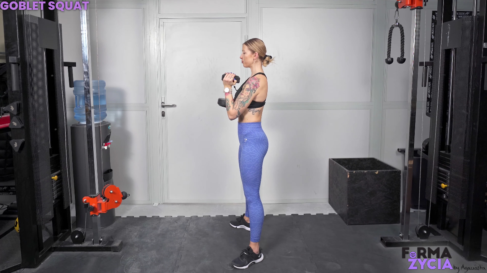

GOBLET SQUAT


1. W obie dłonie złap hantel/kettlebell.
2. Stań na szerokość bioder, palce skieruj przed siebie lub delikatnie na zewnątrz.
3. Napnij brzuch i ściągnij łopatki.
4. Rozpocznij ruch schodzenia w dół, kierując kolana na zewnątrz.
5. Zejdź tak nisko, jak pozwala Ci Twoja mobilność. Zadbaj o to, aby miednica nie podwijała się za mocno (delikatne podwijanie jest akceptowane).
6. Wróć do pozycji wyjściowej, napinając pośladki w górnej fazie ruchu.